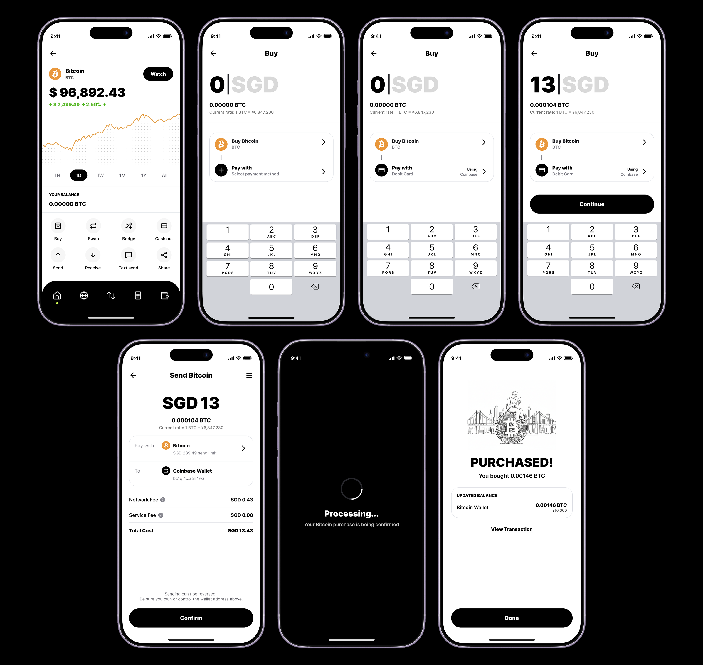

VAULT Wallet: криптокошелёкVAULT Wallet: crypto wallet
Спокойный криптокошелёк для новичков: онбординг, импорт, покупка и вотчлист без привычной тёмной крипто-эстетики.A calm crypto wallet for newcomers: onboarding, import, buying and watchlist without the usual dark crypto aesthetic.
Context
Почти все криптокошельки выглядят одинаково: тёмный интерфейс, плотные графики и термины, из-за которых экран напоминает панель управления космическим кораблём. Для опытного пользователя это ок, для новичка это стоп. Я хотела сделать кошелёк, в котором создать или импортировать его, купить первую монету и следить за курсами не страшнее, чем завести обычное банковское приложение.Almost every crypto wallet looks the same: a dark interface, dense charts and jargon that turn the screen into a spaceship cockpit. Fine if you're experienced, a wall if you're not. I wanted a wallet where creating or importing it, buying your first coin and tracking prices feels no scarier than setting up a normal banking app.
Design challenge
Главная ставка была на визуальный язык. Вместо привычной крипто-эстетики я оттолкнулась от азиатского дизайна: много воздуха, крупная типографика, мягкие скругления, живые иллюстрации и акцентный цвет вместо тёмной технологичности. Сложность была в том, чтобы удержать этот лёгкий, почти дружелюбный тон даже на самых нервных шагах, будь то seed-фраза, подтверждение покупки или безопасность, и при этом не превратить кошелёк в игрушку, из которой выпал функционал.The core bet was the visual language. Instead of the usual crypto aesthetic, I leaned on Asian design: lots of air, large type, soft rounded shapes, lively illustrations and an accent color instead of dark techiness. The hard part was holding that light, almost friendly tone even on the most nerve-racking steps, be it the seed phrase, a purchase confirmation or security, without turning the wallet into a toy that lost its power.

Моя рольMy role
Отвечала за эти сценарии целиком: логика флоу, состояния, UI и тон. Собрала онбординг и импорт кошелька, главную с активами и трендами, покупку монеты и watchlist, и держала единый визуальный язык на всех экранах.I owned these scenarios end to end: flow logic, states, UI and tone. I built onboarding and wallet import, the home with assets and trends, buying a coin and the watchlist, and kept one visual language across every screen.
ЗадачиGoals
- Уйти от крипто-космолёта к спокойному, человечному интерфейсуMove from a crypto spaceship to a calm, human interface
- Провести новичка через создание и импорт кошелька без страхаWalk a newcomer through creating and importing a wallet without fear
- Сделать покупку первой монеты коротким и предсказуемым флоуMake buying the first coin a short, predictable flow
- Собрать главную, которая работает и как обзор, и как точка входаBuild a home that works as both an overview and an entry point
Ключевые решенияKey decisions
Визуальный язык: тёмная крипто-эстетика или спокойный светлый.Visual language: dark crypto aesthetic or a calm, light one. Выбрала светлый азиатский язык — воздух, крупная типографика, мягкие формы, — потому что цель была снять страх у новичка. Отбросила привычный тёмный техно-стиль: он выглядит «серьёзно», но для новичка это стоп и сужение аудитории до крипто-энтузиастов.I chose a light, Asian-inspired language — air, large type, soft shapes — because the goal was to take the fear out of it for a newcomer. I rejected the usual dark techy style: it looks “serious,” but for a newcomer it's a wall and it narrows the audience to crypto enthusiasts.
Где показывать риски: в справке или во флоу.Where to show risks: in help or in the flow. Выбрала выносить предупреждение о скам-фразах и seed прямо в момент решения. Отбросила «спрятать в справку / мелкий шрифт»: новичок туда не заходит, и именно на этом шаге теряют деньги.I chose to surface the seed-phrase and scam warning right at the moment of the decision. I rejected hiding it in help or fine print: a newcomer never opens it, and this is exactly the step where people lose money.
Онбординг: показать всё сразу или раскрывать постепенно.Onboarding: show everything at once or reveal it gradually. Выбрала прогрессивное раскрытие: сложное появляется только тогда, когда до него дошёл черёд. Отбросила полный сетап на старте: стена терминов на первом экране — главная причина отвала новичка.I chose progressive disclosure: complexity shows up only when it's actually its turn. I rejected a full setup up front: a wall of terms on the first screen is the main reason newcomers drop off.
РешениеSolution
Онбординг без давления:Onboarding without pressure: создание кошелька я разложила на спокойные шаги: приветствие, генерация, Face ID и пустая главная, которая сразу подсказывает первое действие. Никакой стены из терминов на старте, сложное появляется только тогда, когда до него дошёл черёд.I broke wallet creation into calm steps: welcome, generation, Face ID and an empty home that points to the first action. No wall of terms up front; complexity shows up only when it's actually its turn.

Импорт существующего кошелька:Importing an existing wallet: человек выбирает способ входа и источник, а предупреждение о скам-фразах я вынесла прямо во флоу, в момент решения, а не спрятала в справку. Безопасность здесь часть разговора, а не мелкий шрифт.the person picks a sign-in method and a source, and I put the seed-phrase scam warning right into the flow, at the moment of the decision, instead of hiding it in help. Here safety is part of the conversation, not fine print.


Главная, которая не перегружает.A home that never overwhelms. Всё выстроено по приоритету и читается спокойно сверху вниз, а до любого действия один тап.Everything is ordered by priority and reads calmly from top to bottom, and any action is just one tap away.

Покупка без сюрпризов:Buying without surprises: это самый нервный момент, поэтому флоу максимально предсказуемый: сумма, способ оплаты, честный итог с комиссиями до подтверждения, затем processing и понятный экран успеха с новым балансом. Пользователь всё время понимает, за что платит и что будет дальше.this is the most nerve-racking moment, so the flow is as predictable as possible: amount, payment method, an honest total with fees before you confirm, then processing and a clear success screen with the new balance. You always know what you're paying for and what happens next.

Watchlist прямо с главной:A watchlist straight from home: отметил монеты звёздочкой, и список сразу закреплён и вынесен в отдельный экран с алертами по важным движениям цены. Минимум шагов между «интересно» и «слежу».star a few coins and the list is instantly pinned and opens as its own screen with alerts on important price moves. As few steps as possible between “interesting” and “watching”.

РезультатOutcome
- 4 шага онбординга до готового кошелька:4 onboarding steps to a ready wallet: приветствие → генерация → Face ID → главная с первым действием, без стены терминов на старте.welcome → generation → Face ID → a home with the first action, with no wall of terms up front.
- Риски — во флоу, не в справке:Risks — in the flow, not in help: seed-фраза и предупреждение о скамах показаны в момент решения, а итог покупки с комиссиями — до подтверждения, а не после. Кошелёк не ощущается «чёрным ящиком».the seed phrase and scam warning appear at the moment of the decision, and the purchase total with fees is shown before you confirm, not after. The wallet never feels like a black box.
- Self-initiated MVP:Self-initiated MVP: спокойный тёплый визуальный язык отличает продукт от тёмных техно-кошельков и расширяет аудиторию за пределы крипто-энтузиастов. Метрик по пользователям пока нет — это концепт-MVP.a calm, warm visual language sets the product apart from dark techy wallets and widens the audience beyond crypto enthusiasts. There are no user metrics yet — it's a concept MVP.